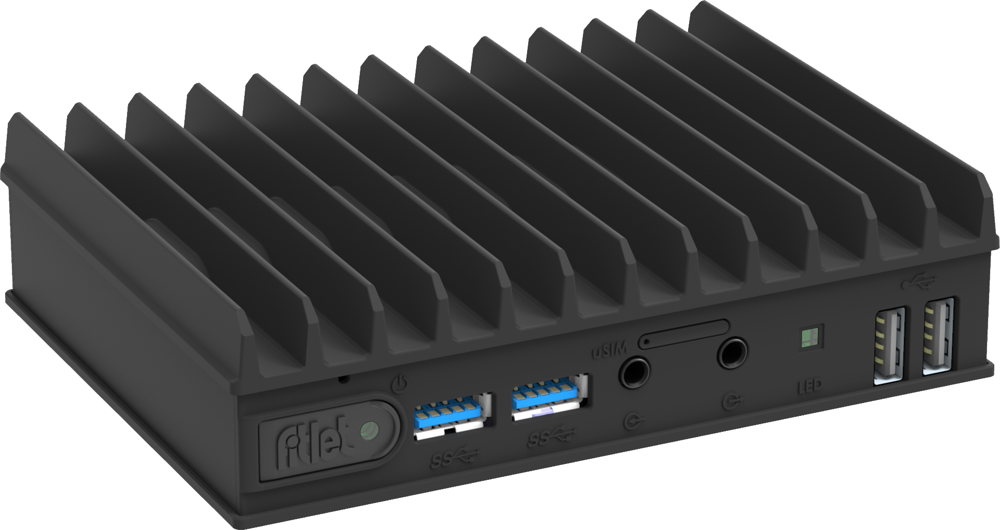
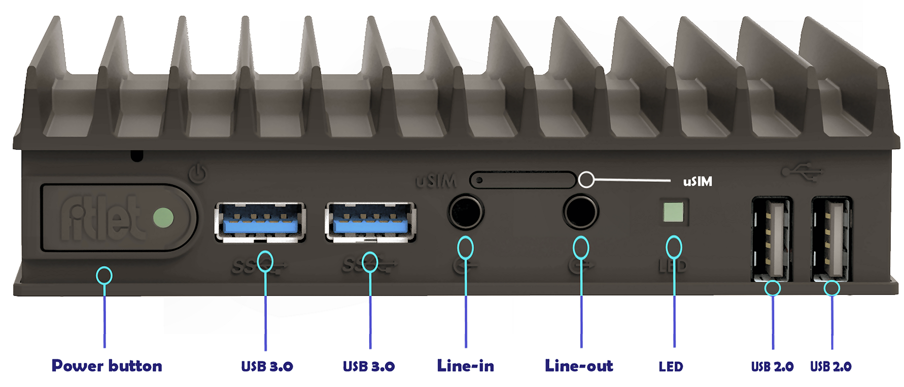

|
marcilr/index.html
by Raymond E. Marcil marcilr@gmail.com
Created Tue 25 Oct 2022 02:33:41 PM AKDT
|
-- Ray
|
|
fanless, IoT technology
by Compulab

fitlet3 – build-to-order [1]
"It provides performance that not long ago required a Core CPU that could not be fitted in such a small passively-cooled footprint due to higher power consumption." [2]
fitlet2 to fitlet3 upgrade
From git/ inspection looks
like I made my first fitlet2 purchase on
Janary 9, 2019.
Running dmesg shows fitlet2 has 1TB Crucial CT1000MX500SSD1 drive.
$ sudo dmesg
...
[ 3.743903] ata1.00: ATA-10: CT1000MX500SSD1, M3CR023, max UDMA/133
...
$
Whilst the 1TB Crucial SSD has done great an NVMe in the new fitlet3
would alleviate the attached bay for the 2.5" SSD drive.
fitlet3 front

--fit-PC wikii [5]
Front includes 9 items:
- Power button
- 2x USB 3.0
- Audio line-in
- uSIM
- Audio line-out
- LED
- 2x USB 2.0
fitlet3 back

--fit-PC wikii [6]
Front includes 7 items:
- 1x USB 2.0
- HDMI
- miniDP, amazon has miniDP to hdmi
adapters.
- DC IN
- COM
- 2x GbE RJ4[6]
| Description |
Price |
| 32GB ram (max) |
$177.80 |
| 1TB M.2 NVMe Storage |
$149.73 |
| Terminal block w/ RS-232, RS-485, GPIOs [S] |
$11.94 |
FC3-LAN 2x Gbit Ethernet [FLAN]
2x extra RJ45, for 4x total
|
$23.65 |
| Base price |
$295.59 |
| Total |
$658.71 |
$177.80 + $149.73 + $11.94 + $23.65 + $295.59 = $658.71
Wow, this is a pretty outstanding low cost box.
NOTE: Struck M.2 SATA 512 GB [M512], $168.93 from build.
1TB M.2 NVMe storage is the way to go.
Attribute |
Description |
Price |
| cpu |
Atom x6425E, 4C, 2.0GHz, 12W
| default |
| ram |
32GB |
$177.80 |
| nvme |
1TB
Is NVMe and 2.5" HDD/SDD possible in the same Fitlet3?
Multiple boot targets would be desirable.
|
$149.73 |
| serial and GPIO port |
Not installed by default. |
$11.94 |
| sata |
Optional 2.5" HDD/SSD bay would be nice.
Keeping the option of alternate storage.
1TB or 2TB Crucial 2.5" SSD strikes me as
a good item.
The fitlet3 supports 2 storage devices.
The fitlet2 supports 1 storage device.
Would require optional bottem attachment.
The Fitlet2 has this.
Then again with 1TB NVMe perhaps superfluous.
|
??? |
| net |
2x GbE RJ45 (default)
Optional: 2x GbE RJ45
for 4x total |
$23.65 |
| wifi |
Optional WiFi 6E
and Bluetooth 5 module (not needed)
|
|
| dimensions |
132.8 x 100 x 34.8 mm [3] |
|
| weight |
420 grams [3] |
|
| sku |
FITLET3 |
| price |
Base price |
$295.50 |
| total |
total for all components |
$658.62 |
$177.80 + $149.73 + $11.94 + $23.65 + $295.50 = $658.62
All metrics from fitlet3 – build-to-order page unless otherwise noted.
It provides performance that not long ago required
a Core CPU that could not be fitted in such a small
passively-cooled footprint due to higher power
consumption."[2]
Filelist
Fitlet2
Compulab workstation that I use on a daily basis.
Wed 26 Oct 2022 0[6]:09:39 PM AKDT
fitlet3_datasheet.pdf
Link from fit-PC wiki [4]
https://s3.amazonaws.com/fit-iot/fitlet3/documents/fitlet3_datasheet.pdf
fitlet3-owners-manual.pdf
Link from fit-PC wiki [4]
https://fit-iot.com/files/fitlet3/documents/fitlet3-owners-manual.pdf
fitlet2-vs-fitlet3.pdf
Comparison of fitlet3 vs fitlet2 characteristics
Link from fit-PC wiki [4]
https://s3.amazonaws.com/fit-iot/fitlet3/documents/fitlet2-vs-fitlet3.pdf
Links
[1] fitlet3 – build-to-order
https://fit-iot.com/web/product/fitlet3-build-to-order/
[2] fitlet2, Miniature, Capable, Durable,
IoT ready, Afforadable
https://fit-iot.com/web/products/fitlet2/
[3] Fitlet3 is a compact, fanless Elkhart Lake mini PC for IoT and industrial applications
FEBRUARY 9, 2022 BY JEAN-LUC AUFRANC (CNXSOFT) - 2 COMMENTS
https://www.cnx-software.com/2022/02/09/fitlet3-compact-fanless-elkhart-lake-mini-pc-for-iot-and-industrial-applications/
[4] Fitlet3
fit-PC wiki
https://fit-pc.com/wiki/index.php?title=Fitlet3
[5] Fitlet3 front
fit-PC wiki
https://fit-pc.com/wiki/index.php?title=File:Fitlet3_front_with_text_wbg_v6.png
[6] Fitlet3 back
fit-PC wiki
https://fit-pc.com/wiki/index.php?title=File:Fitlet3_back_with_text_wbg_v6.png
Comparison of fitlet3 vs fitlet2 characteristics
Very, very nice comparison chart.
Compulab
https://s3.amazonaws.com/fit-iot/fitlet3/documents/fitlet2-vs-fitlet3.pdf
"Compulab IoT Gateways
are highly customizable and cost effective industrial systems
designed for Internet of Things connectivity and remote control
and monitoring applications."
https://www.compulab.com/products/iot-gateways
Crucial - P3 1TB Internal SSD PCIe Gen 3.0 NVMe
Model:CT1000P3SSD8SKU:6[6]09712
Very nice at $73.99
Is it compatible with fitlet3?
https://www.bestbuy.com/...
Crucial NVMe SSDs
NVMe is the latest and fastest in performance SSD technology
https://www.crucial.com/products/ssd
FC3-EB-M2SATA FACET Card
SATA expansion for 2.5" HDD / SSD 2,3
This could totally enable a 1TB or
2TB SSD drive.
https://fit-pc.com/wiki/index.php?title=EB-M2SATA_FACET3_Card
FC3-EB-M2SATA FACET Card
SATA expansion for 2.5" HDD / SSD 2,3
This could totally enable a 1TB or
2TB SSD drive.
https://fit-pc.com/wiki/index.php?title=EB-M2SATA_FACET3_Card
fitlet2
fit-iot.com/web/products/fitlet2/
fitlet3 – build-to-order
https://fit-iot.com/web/product/fitlet3-build-to-order/
fitlet3 Specifications and block diagram
https://fit-pc.com/wiki/index.php?title=Fitlet3_Specifications_and_block_diagram
Fitlet3 - fit-PC wiki
https://fit-pc.com > wiki > title=Fitlet3
Great pictures with labeled Fitlet3 ports.
https://fit-pc.com/wiki/index.php?title=Fitlet3
Intel Atom® x6425E Processor
https://www.intel.com/content/www/us/en/products/sku/207907/intel-atom-x6425e-processor-1-5m-cache-up-to-3-00-ghz/specifications.html
| {kind=link}
{kind=link}
{kind=link}
{kind=link}